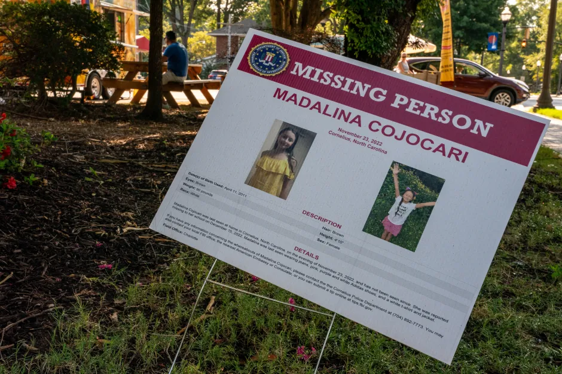

AUGUST 22, 2023
SILENT & ALONE Madalina Cojocari’s home stands empty in eerie pics 9 months after girl, 12, vanished following mystery bonfire in yard

.png)
A MISSING 12-year-old girl's home has appeared empty in eerie new pictures taken by The U.S. Sun nine months after she vanished.
The last confirmed sighting of Madalina Cojocari was getting off the school bus in her Cornelius, North Carolina neighborhood - which is about 20 miles north of uptown Charlotte - on November 21, 2022, according to police.
The missing 12-year-old's home appeared dark and empty in eerie new photographs taken by The U.S. Sun on Friday, prior to the girl's stepdad being released from jail
A missing person sign with Madalina's photos has been staked into the ground at the front of her North Carolina neighborhood
STEPDAD COMES HOME
Madalina's stepfather, Christopher Palmiter, was released on $25,000 bond on Friday.
Electronic monitoring was part of Palmiter's secure bond agreement, and he's already turned over his passport, according to his attorney, Brandon Roseman's, statement to the judge at Thursday's hearing.
The attorney told the judge that Palmiter would be unable to "float" the mortgage on the Victoria Bay house much longer if remained in jail.
After listening to the attorney's arguments, the judge agreed to lower the bond from $200,000 to $25,000, and Palmiter was released the next evening.
Her mother, Diana, is being held on $250,000 bond at a Charlotte jail on Failure to Report a Child Disappearance charges.
Palmiter was seen returning to the family's Cornelius home - for the first time in nine months - after he was released on bond, according to local NBC affiliate WCNC.
DARK AND VACANT
A few hours before Palmiter's arrival, The U.S. Sun observed the eerie house, which appeared to be dark and vacant.
There was no sign of anybody living in the house.
The two-story brick home had all of the blinds pulled closed on the windows, and there were no cars in the driveway or coming and going from the house.
A white swing on Madalina's front porch was moving gently in the breeze, and a constant flow of traffic was seen entering and exiting the quiet suburban neighborhood.
None of the vehicles stopped at Madalina's house though.
"Several minivans and SUVs on a neighboring street were bustling with parents' getting children in and out of the car.
And children's bicycles and kids' shoes were seen strewn on neighboring front porches signaling the pitter-patter of other small feet in the neighborhood.
Not at Madalina's home though.
It remained dark and quiet the entire morning.
HER NEIGHBOR'S WON'T FORGET
The U.S. Sun spoke to several of Madalina's neighbors on Friday, who all said they're continuing to follow the little girl's story.
It was a mutual consensus that everyone is hoping her story will have a happy ending.
Several neighbors described it as simply: "Sad," and "Tragic."
Many of Madalina's neighbors still have yellow ribbons tied to their mailboxes in honor of the missing 12-year-old.
One neighbor told The U.S. Sun some neighbors have taken the ribbons down, as they're starting to fade and fall apart after being displayed for nine months and counting.
Dozens of homes have the ribbons up anyway though.
They serve as a sign of hope and support for the missing girl, a neighbor said.
However, there was not a yellow ribbon tied to Madalina's mailbox.
A no trespassing sign was, however, hung on Madalina's front porch window.
The sign warns visitors that they are being monitored and recorded on video.
It is not clear if that sign was present on the home's front window prior to Madalina disappearance.
Madalina's mother, Diana Cojocari, and stepfather, Christopher Palmiter have maintained that they don't know where she is, per unsealed search warrants.
They were the only two people living in the home with her at the time of her disappearance.
The couple waited weeks to report Madalina missing, and police have said they know more than they're saying.
Police have said they're still actively searching for Madalina with the help of the FBI and SBI.
Dozens of homes in Madalina Cojocari's neighborhood are displaying yellow ribbons in honor of the missing girl
One neighbor told The U.S. Sun some neighbors have taken the ribbons down, as they're starting to fade and fall apart after being displayed for nine months and counting.
Madalina was last seen getting off her school bus on November 21, 2022
More Published Articles